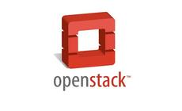

Overview
This code base is under development, so ask Matt Ray about the current state if these instructions aren't currently working.
StatusRight now the Cactus cookbooks support a single machine with Glance and Nova, but they are under active development. Other components will be added in time and new releases will be added as they are available. There is currently no intention to continue development on previous releases once a new release is available (but they are available and patches are welcome!). The eventual goal is to support all the configuration options available for OpenStack with Chef cookbooks. All code in the repository is Apache 2 licensed and covered by the Contribution License Agreement. Patches will not be accepted without this requirement. RequirementsThis has been primarily tested with Ubuntu 10.04 (a bit with 10.10) and Chef 0.10 and later. Hardware Requirements
OpenStackWhat is OpenStack?
CodeThe cookbooks and configuration files are currently available from Matt Ray's GitHub repository. (note the "cactus" branch) git clone git://github.com/mattray/openstack-cookbooks.git These were originally forked from the work in Anso Labs' OpenStack-Cookbooks but have diverged greatly since the original fork. |
|
CookbooksDownload the following cookbooks: knife cookbook site download apache2 0.99.4 knife cookbook site download apt 1.1.2 knife cookbook site download mysql 1.0.5 knife cookbook site download openssl 1.0.0 knife cookbook site download rabbitmq 1.2.1
Once the cookbooks have been all been downloaded and untarred into the cookbooks directory knife cookbook upload -a
RolesFrom the openstack-cookbooks directory rake roles to load all the roles in the repository. Here is a graphic of the relationships between the roles (ovals) and recipes: nova-single-machineInstalls everything required to run Nova on a single machine, a special case of multi-node and simply depends on the "nova-multi-controller" and "nova-multi-compute" roles. nova-multi-controller
nova-multi-compute
Configure Attributes for DeploymentOpenStack is a complicated application with many configurable and interchangeable components. Once you have your repository and have uploaded your cookbooks and roles, you will need to configure and upload the openstack data bag. Glance and Nova are configured with the glance and nova JSON files in the data_bags/openstack/ directory. AMIs to be installed are managed with the images JSON file. You may upload these with rake databag:upload_all There are also attributes available for configuration, these may be overridden as necessary. Once these are in place you may apply the roles to nodes. The default installation currently uses MySQL, RabbitMQ and KVM and only deploys Glance on the Nova Controller (so no integration with Swift yet). Single nodeknife node run_list add server "role[nova-single-machine]" and run the chef-client on the machine. Multi nodeknife node run_list add mycontroller "role[nova-multi-controller]" knife node run_list add mycomputenodeN "role[nova-multi-compute]" and run the chef-client on the controller and then compute node(s). Verify your InstallationOnce you've deployed your servers, SSH into the controller node (or single box) and sudo su - nova then, as the nova user verify that your services are all running properly: nova@$ nova-manage service list mycontroller nova-scheduler enabled :-) 2011-06-23 18:30:45 mycontroller nova-network enabled :-) 2011-06-23 18:30:48 mycomputenodeN nova-compute enabled :-) 2011-06-23 18:30:50 and list the available images nova@mycontroller:~$ euca-describe-images IMAGE aki-00000001 None (lucid-server-uec-amd64-vmlinuz-virtual) available public kernel IMAGE ami-00000002 None (lucid-server-uec-amd64.img) available public machine aki-00000001 IMAGE aki-00000003 None (maverick-server-uec-amd64-vmlinuz-virtual) available public kernel IMAGE ami-00000004 None (maverick-server-uec-amd64.img) available public machine aki-00000003 select the ami-00000002 (or whichever you prefer) and enter the following nova@$ euca-run-instances ami-00000002 -k mykey -t m1.tiny RESERVATION r-mro4sk16 admin default INSTANCE i-00000001 ami-00000002 scheduling mykey (admin, None) 0 m1.tiny 2011-06-23T22:17:31Z unknown zone see the progress as your instance starts up nova@$ euca-describe-instances RESERVATION r-mro4sk16 admin default INSTANCE i-00000001 ami-00000002 192.168.11.2 192.168.11.2 running mykey (admin, mycontroller) 0 m1.tiny 2011-06-23T22:17:31Z nova once it is running nova@$ ssh -i mykey.priv ubuntu@192.168.11.2 and connect to your new OpenStack instance. knife openstackOpenStack is supported by the Chef command-line tool knife with Chef 0.10 and the knife openstack plugin. You can install it with "gem install knife-openstack". You will need to update your .chef/knife.rb with the following: knife[:openstack_access_key_id] = "Your OpenStack Access Key ID" knife[:openstack_secret_access_key] = "Your OpenStack Secret Access Key" knife[:openstack_api_endpoint] = "http://mycontroller:8773/service/Cloud" You can get the access_key and secret_key values with "knife node show mycontroller -a nova | grep key" You should now be able to run knife openstack server create -S mykey -x ubuntu -I ami-52f4e131 -f m1.tiny which currently fails to bootstrap, but creates the instance (euca-describe-instances will list it). http://tickets.opscode.com/browse/KNIFE_OPENSTACK-1 RoadmapThis is a non-ordered list of things that are prioritized to work on.
|

{kind=link}
{kind=link}
{kind=link}
{kind=link}